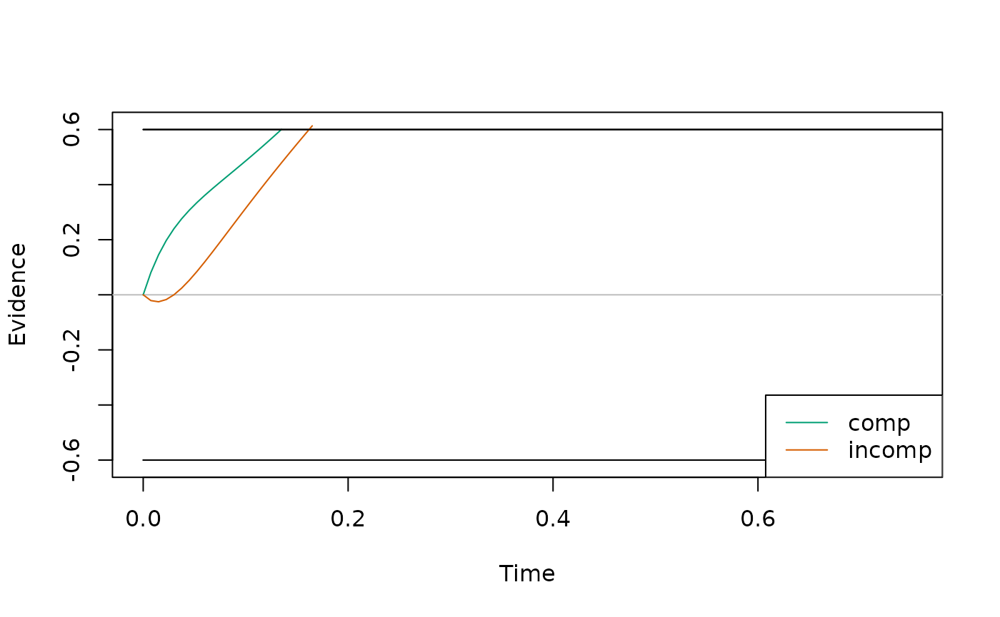
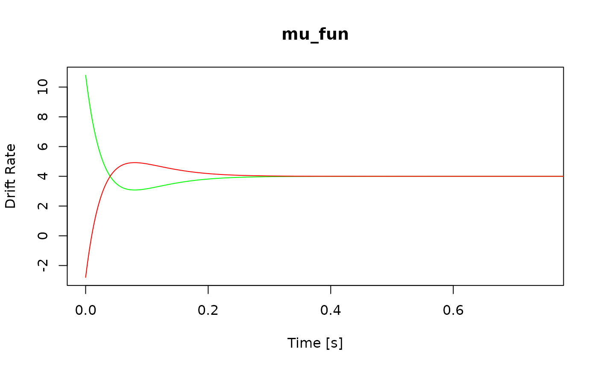
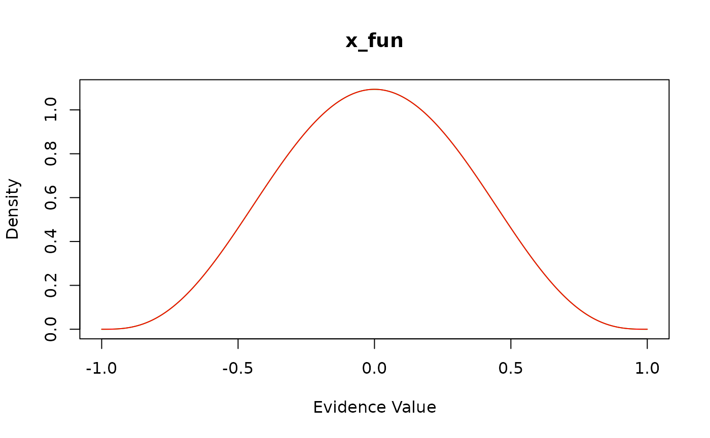
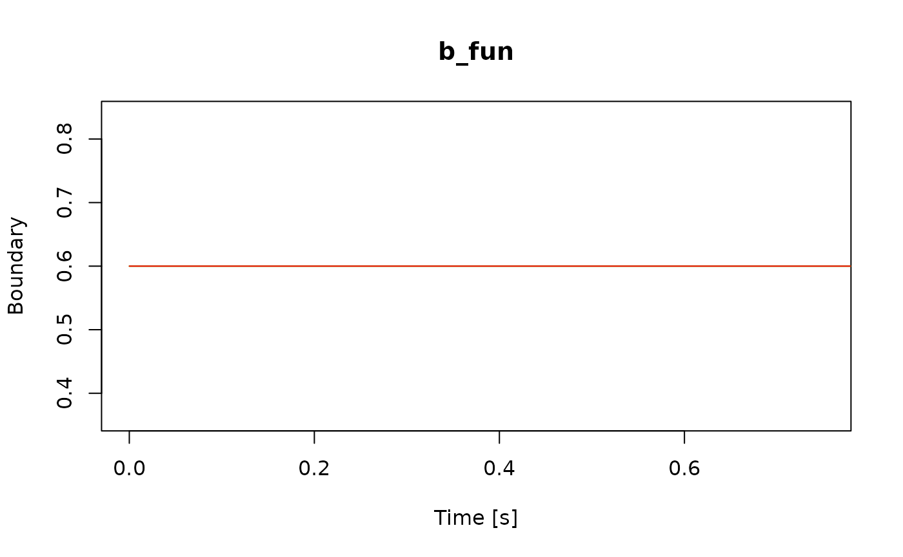
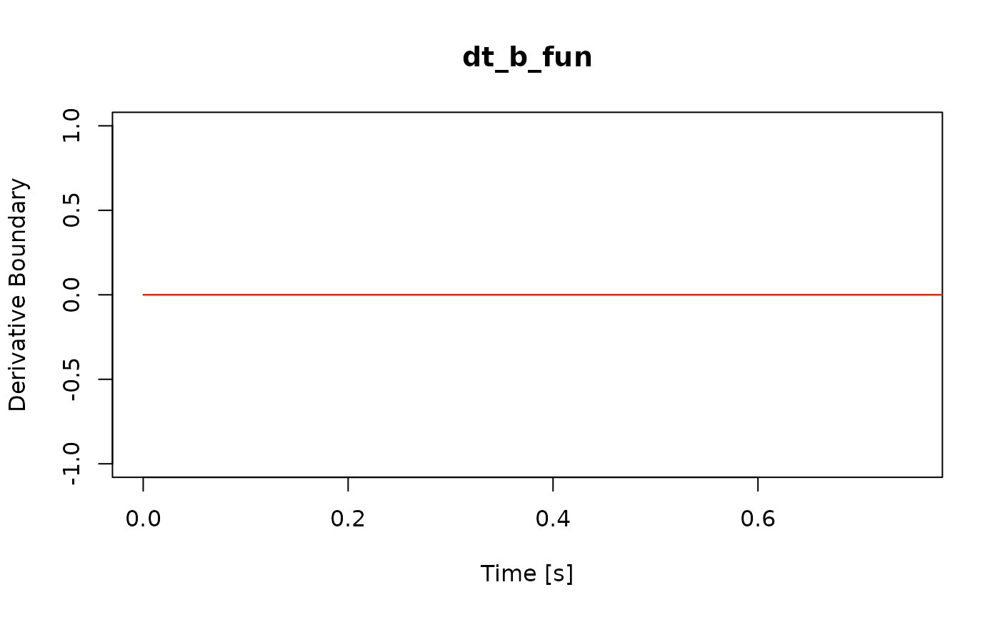
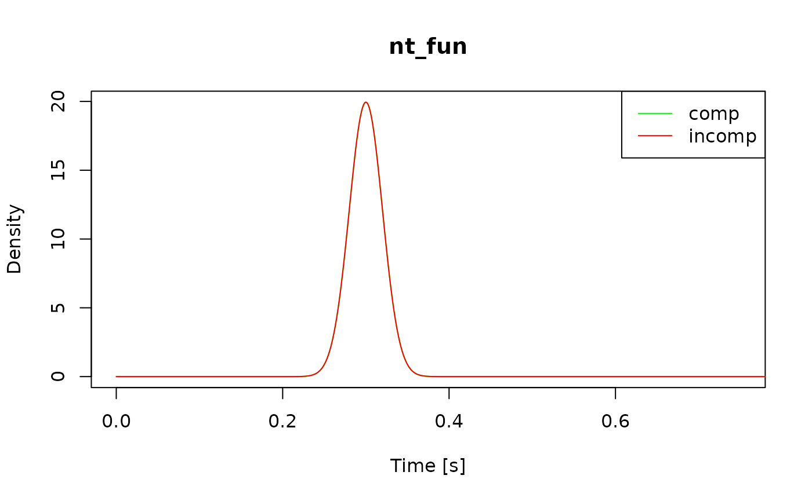

The dRiftDM package provides pre-built Drift-Diffusion
Models (DDMs, see vignette("dRiftDM", "dRiftDM")). However,
one of the strengths of dRiftDM is that it allows you to
customize models by specifying arbitrary component functions for the
drift rate, boundary, etc., and how the parameters relate across
conditions.
The Model Structure in dRiftDM
To better understand how we can customize a DDM, we first need to
understand how models are structured within dRiftDM and how
model predictions are derived. Each model in dRiftDM is
essentially a list that has (among other things) two important
entries:
flex_prms_objcontaining a so-calledflex_prmsobject, which controls the parameterscomp_funsa list of “component” functions that represent the model’s drift rate, boundary, etc.
We can see these entries by addressing the labels of the underlying list:
a_model <- ratcliff_dm() # some model
names(a_model) # the entries of the underlying list
#> [1] "flex_prms_obj" "prms_solve" "solver" "comp_funs"With the flex_prms object (stored as the first entry),
we can specify the parameters of the model and also control how each
parameter relates across conditions. For example, we could specify that
a parameter A in condition incomp is the
negative of parameter A in condition comp. Or
we could specify that a parameter muc is estimated
separately for two conditions.
With the functions stored in comp_funs (the fourth
entry), we can control the drift rate, boundary, starting point, and
non-decision time. Each function takes a set of arguments, including the
model parameters, and returns a vector of values. For example, the drift
rate function returns the drift rate of the diffusion model for each
time step.
When deriving the model predictions, the comp_funs are
evaluated with the currently set parameter values controlled by the
flex_prms object. Dedicated numerical algorithms in the
depths of dRiftDM then derive the model’s predicted
probability density functions of response times and choices. It is
important to emphasize this interaction of comp_funs with
the flex_prms object, as you will need to ensure that the
two work together smoothly. For example, a function stored in
comp_funs might fail if it is given a parameter vector that
it does not expect. Or a model might not work as expected if a function
stored in comp_funs doesn’t return code for a certain
parameter. We tried to emphasize the workflow in the following
diagram:
Given this, there are two ways to customize a model, and depending on the problem, you may need to consider both or only one.
1.) You can modify a model’s flex_prms object. This is
relevant whenever you want to change how the parameters of a model
relate across conditions.
2.) You can customize the component functions. This is relevant whenever you want to have a different drift rate, boundary, starting point, or non-decision time.
Modifying flex_prms objects
We can access the underlying flex_prms object of a model
with the generic flex_prms() accessor method:
# Create a model (here the Diffusion Model for Conflict Tasks, DMC)
ddm <- dmc_dm()
flex_prms(ddm)
#> Current Parameter Matrix:
#> muc b non_dec sd_non_dec tau a A alpha
#> comp 4 0.6 0.3 0.02 0.04 2 0.1 4
#> incomp 4 0.6 0.3 0.02 0.04 2 -0.1 4
#>
#> Unique Parameters:
#> muc b non_dec sd_non_dec tau a A alpha
#> comp 1 2 3 4 5 0 6 7
#> incomp 1 2 3 4 5 0 d 7
#>
#> Special Dependencies:
#> A ~ incomp == -(A ~ comp)
#>
#> Custom Parameters:
#> peak_l
#> comp 0.04
#> incomp 0.04Here we see the two core aspects of any flex_prms object
(see also the first print statement in
vignette("dRiftDM", "dRiftDM") for more information):
The Current Parameter Matrix shows you the current parameter value across all conditions.
The Unique Parameters show how each parameter behaves across conditions.
Modifying How Each Parameter Behaves Across Conditions
The Unique Parameters are relevant to model
customization, and we can change them with the
modify_flex_prms() method. The function takes a model and a
set of instructions as a string. For example, if we
want muc to vary freely across conditions, we can write
ddm_free_muc <- modify_flex_prms(
ddm, # the model
instr = "muc ~" # an instructions in a formula-like format
)
flex_prms(ddm_free_muc)
#> Current Parameter Matrix:
#> muc b non_dec sd_non_dec tau a A alpha
#> comp 4 0.6 0.3 0.02 0.04 2 0.1 4
#> incomp 4 0.6 0.3 0.02 0.04 2 -0.1 4
#>
#> Unique Parameters:
#> muc b non_dec sd_non_dec tau a A alpha
#> comp 1 3 4 5 6 0 7 8
#> incomp 2 3 4 5 6 0 d 8
#>
#> Special Dependencies:
#> A ~ incomp == -(A ~ comp)
#>
#> Custom Parameters:
#> peak_l
#> comp 0.04
#> incomp 0.04Since there are now two numbers for muc under
Unique parameters, this parameter can take different
values for different conditions. This is also why coef()
now provides two (modifiable) values for muc per
condition:
coef(ddm) # in this model muc is the same for all conditions
#> muc b non_dec sd_non_dec tau A alpha
#> 4.00 0.60 0.30 0.02 0.04 0.10 4.00
coef(ddm_free_muc) # here muc can be different for the conditions
#> muc.comp muc.incomp b non_dec sd_non_dec tau A
#> 4.00 4.00 0.60 0.30 0.02 0.04 0.10
#> alpha
#> 4.00
coef(ddm_free_muc)[1] <- 5
coef(ddm_free_muc)
#> muc.comp muc.incomp b non_dec sd_non_dec tau A
#> 5.00 4.00 0.60 0.30 0.02 0.04 0.10
#> alpha
#> 4.00modify_flex_prms() supports the following instructions
(see the documentation for the syntax of each instruction):
The vary instruction: Allows parameters to be estimated independently across conditions.
The “restrain” instruction: Force parameters to be identical across conditions.
The “fix” instruction: Keep parameters constant. They don’t vary while the remaining parameters are estimated.
The “special dependency” instruction: Sometimes we want a parameter in one condition to depend on another parameter in a second condition. An example of this is already shown in the
flex_prms(ddm)output above. Here the parameterAin the conditionincompis the negative of the parameter in the conditioncomp.The “custom parameter” instruction: Sometimes, we want to calculate a linear combination of the model parameters. An example for this is already shown in the
flex_prms(ddm)output above. Here, we have the custom parameterpeak_l, which is (the equation is not apparent from the output).
Defining New Conditions
The current conditions of a model can be accessed with the
conds() method:
conds(ddm)
#> [1] "comp" "incomp"We can assign new values to change these conditions. For example, a researcher may want to introduce a neutral condition:
Here we receive a message reminding us that all parameter values have
been reset. In fact, when we print out the underlying
flex_prms object, we see that the previous settings are
gone (e.g., A in the incomp condition is no
longer the negative of A in the comp
condition):
flex_prms(ddm)
#> Current Parameter Matrix:
#> muc b non_dec sd_non_dec tau a A alpha
#> comp 4 0.6 0.3 0.02 0.04 2 0.1 4
#> neutral 4 0.6 0.3 0.02 0.04 2 0.1 4
#> incomp 4 0.6 0.3 0.02 0.04 2 0.1 4
#>
#> Unique Parameters:
#> muc b non_dec sd_non_dec tau a A alpha
#> comp 1 2 3 4 5 6 7 8
#> neutral 1 2 3 4 5 6 7 8
#> incomp 1 2 3 4 5 6 7 8While this may be a bit annoying in some cases, it actually makes
sense because there is no way for dRifDM to know how the new conditions
relate to the old ones. Consequently, we would now have to modify the
underlying flex_prms object again to suit our needs. For
example, we could restore the previous behavior for A in
incomp conditions, while setting it to zero for the new
neutral condition. We might also want to keep
a again fixed for all conditions:
instructions <- "
a <!> # 'a' is fixed across all conditions
A ~ incomp == -(A ~ comp) # A in incomp is -A in comp
A <!> neutral # A is fixed for the neutral condition
A ~ neutral => 0 # A is zero for the neutral condition
"
ddm <- modify_flex_prms(
object = ddm,
instr = instructions
)
print(ddm)
#> Class(es): dmc_dm, drift_dm
#>
#> Current Parameter Matrix:
#> muc b non_dec sd_non_dec tau a A alpha
#> comp 4 0.6 0.3 0.02 0.04 2 0.1 4
#> neutral 4 0.6 0.3 0.02 0.04 2 0.0 4
#> incomp 4 0.6 0.3 0.02 0.04 2 -0.1 4
#>
#> Unique Parameters:
#> muc b non_dec sd_non_dec tau a A alpha
#> comp 1 2 3 4 5 0 6 7
#> neutral 1 2 3 4 5 0 0 7
#> incomp 1 2 3 4 5 0 d 7
#>
#> Special Dependencies:
#> A ~ incomp == -(A ~ comp)
#>
#> Deriving PDFs:
#> solver: kfe
#> values: sigma=1, t_max=3, dt=0.001, dx=0.001, nt=3000, nx=2000
#>
#> Observed Data: NULLCustomizing Component Functions
As mentioned above, another way to customize a model is to change the
component functions for the drift rate, boundary, start point, or
non-decision time. We can access each component function using the
comp_funs() method:
ddm <- dmc_dm() # some pre-built model
names(comp_funs(ddm))
#> [1] "mu_fun" "mu_int_fun" "x_fun" "b_fun" "dt_b_fun"
#> [6] "nt_fun"mu_fun()andmu_int_fun()are the drift rate and its integral. The integral is required as an entry, but is only evaluated if the user chooses the non-default method “im_zero” when deriving model predictions.x_fun()returns the density for the initial distribution.The
b_fun()anddt_b_fun()functions returns the (upper) boundary and its derivative, respectively.Finally,
nt_fun()returns the density of the non-decision time.
A number of predefined component functions are available via
component_shelf() (see the documentation for a description
of each function):
all_funs <- component_shelf()
names(all_funs)
#> [1] "mu_constant" "mu_dmc" "mu_ssp"
#> [4] "mu_int_constant" "mu_int_dmc" "x_dirac_0"
#> [7] "x_beta" "x_uniform" "b_constant"
#> [10] "b_hyperbol" "b_weibull" "dt_b_constant"
#> [13] "dt_b_hyperbol" "dt_b_weibull" "nt_constant"
#> [16] "nt_uniform" "nt_truncated_normal" "dummy_t"The structure of each of these component functions is generally the same. The drift rate, boundary, and non-decision time functions (i.e., mu_fun, mu_int_fun, b_fun, dt_b_fun, and nt_fun) must have the following declaration:
... <- function(prms_model, prms_solve, t_vec, one_cond, ddm_opts) {
...
}-
prms_modelis a named numeric vector and is identical to a row of the Parameter Matrix of a model.
flex_prms(ddm)
#> Current Parameter Matrix:
#> muc b non_dec sd_non_dec tau a A alpha
#> comp 4 0.6 0.3 0.02 0.04 2 0.1 4
#> incomp 4 0.6 0.3 0.02 0.04 2 -0.1 4
#>
#> Unique Parameters:
#> muc b non_dec sd_non_dec tau a A alpha
#> comp 1 2 3 4 5 0 6 7
#> incomp 1 2 3 4 5 0 d 7
#>
#> Special Dependencies:
#> A ~ incomp == -(A ~ comp)
#>
#> Custom Parameters:
#> peak_l
#> comp 0.04
#> incomp 0.04-
prms_solveis a named numeric vector, including the diffusion constant and the discretization settings. It is identical to:
prms_solve(ddm)
#> sigma t_max dt dx nt nx
#> 1e+00 3e+00 1e-03 1e-03 3e+03 2e+03-
t_vecis a numeric vector, representing the time space. It is constructed fromdtandt_max:
t_max <- prms_solve(ddm)["t_max"]
dt <- prms_solve(ddm)["dt"]
t_vec <- seq(0, t_max, dt)
head(t_vec)
#> [1] 0.000 0.001 0.002 0.003 0.004 0.005
tail(t_vec)
#> [1] 2.995 2.996 2.997 2.998 2.999 3.000one_condis the label of the current condition for which the model is being evaluated (i.e., a row name of the Parameter Matrix).ddm_optsis taken directly from the model. It is used as a backdoor to inject arbitraryRobjects (see the final comments below for an example)
Each drift rate, boundary, and non-decision time function must return
a numeric vector of the same length as t_vec (see below for
examples).
For the drift rate, these returned values represent the drift rate (or its integral) at each time step.
For the boundary (or its derivative), these values are the boundary values returned for the upper boundary at each time step. The lower boundary is always assumed to be the negative of the upper boundary. That is, the bounds are symmetric about zero.
Finally, the values returned for the non-decision time represent the density values of the respective distribution.
The declaration for the starting point function, x_fun,
is similar, with one exception. It must take the argument
x_vec:
... <- function(prms_model, prms_solve, x_vec, one_cond, ddm_opts) {
...
}-
x_vecis a numeric vector, with the (standardized) evidence space. It is constructed fromdxand spans from -1 to 1:
dx <- prms_solve(ddm)["dx"]
x_vec <- seq(-1, 1, dx)Each starting point function must return a numeric vector of the same
length as x_vec, providing the density values of the
starting points over the evidence space.
In theory, you can simply replace component functions using the
replacement method for comp_funs(). However, at runtime,
the values for the arguments prms_model and
one_cond come from a row of the model’s parameter matrix
(i.e., from the underlying flex_prms object). Thus, you
must ensure that each component function can handle the values supplied.
Consequently, directly swapping functions only makes sense when the
model parameters remain the same. The more general approach is to write
a function that assembles the model, as shown below.
Example: Custom Drift Rate
Assume that we want a model with the following custom drift rate: $$\mu(t) = \left\{ \begin{array}{ c l } muc + mua & \quad \textrm{for compatible conditions} \\ muc - mua & \quad \textrm{for incompatible conditions} \end{array} \right.$$ Thus, in compatible conditions, the drift rate at each time step is the sum of the two drift rates and , while in incompatible conditions it is their difference.
First, we write the corresponding drift rate function like this:
cust_mu <- function(prms_model, prms_solve, t_vec, one_cond, ddm_opts) {
# extract all parameters (one row of the parameter matrix)
muc <- prms_model[["muc"]]
mua <- prms_model[["mua"]]
sign <- prms_model[["sign"]]
# and return the drift rate at each time step
mu <- rep(muc + sign * mua, length(t_vec))
return(mu)
}Within this function, we first extract the model parameters relevant
to the calculation of the drift rate. Then, depending on an auxiliary
parameter sign, we sum both parameters and return the
vector of drift rates for each time step.
The next step is to create a function that assembles the custom model
by calling dRiftDM’s backbone function drift_dm(). Here we
define vectors for all model parameters and conditions. We then assemble
the model using not only our custom drift rate function, but also
pre-built functions for the boundary, start point, and non-decision
time.1.
Finally, we ensure that the auxiliary sign parameter works as intended
by modifying the parameter settings with
modify_flex_prms():
cust_model <- function() {
# define all parameters and conditions
prms_model <- c(
muc = 3, mua = 1, sign = 1, # parameters for the custom drift rate function
b = .6, # parameter for a time-independent boundary "b"
non_dec = .2 # parameter for a non-decision time "non_dec"
)
conds <- c("comp", "incomp")
# get access to pre-built component functions
comps <- component_shelf()
# call the drift_dm function which is the backbone of dRiftDM
ddm <- drift_dm(
prms_model = prms_model,
conds = conds,
subclass = "my_custom_model",
mu_fun = cust_mu, # your custom drift rate function
mu_int_fun = comps$dummy_t, # a dummy function, because no integral of the drift rate is required per default
x_fun = comps$x_dirac_0, # pre-built dirac delta on zero for the starting point
b_fun = comps$b_constant, # pre-built time-independent boundary with parameter b
dt_b_fun = comps$dt_b_constant, # pre-built derivative of the boundary
nt_fun = comps$nt_constant # pre-built non-decision time with parameter non_dec
)
# modify the flex_prms object to achieve the desired behavior of 'sign'
# -> don't consider 'sign' a free parameter to estimate and set it to -1
# for incompatible conditions
ddm <- modify_flex_prms(ddm, instr = "sign <!>
sign ~ incomp => -1")
return(ddm)
}
ddm <- cust_model()If we want to use the “im_zero” method to derive model predictions, we also need to write a function for the integral of the drift rate:
cust_mu_int <- function(prms_model, prms_solve, t_vec, one_cond, ddm_opts) {
# extract all parameters (one row of the parameter matrix)
muc <- prms_model[["muc"]]
mua <- prms_model[["mua"]]
sign <- prms_model[["sign"]]
# and return the integral of the drift rate
mu <- (muc + sign * mua) * t_vec
return(mu)
}This function is then passed to the mu_int_fun argument
within the cust_model() function. Everything else is the
same.
Example: Custom Starting Point (Distribution)
Suppose we want a model where the starting point of the diffusion process is controlled by a parameter . If , the starting point is zero. If , the starting point is closer to the upper boundary. If , the start point is closer to the lower boundary. Such a custom starting point distribution might look like this:
cust_x <- function(prms_model, prms_solve, x_vec, one_cond, ddm_opts) {
dx <- prms_solve[["dx"]]
z <- prms_model[["z"]]
stopifnot(z > 0, z < 1)
# create a dirac delta for the starting point
x <- numeric(length = length(x_vec))
index <- round(z * (length(x) - 1)) + 1
x[index] <- 1 / dx # make sure it integrates to 1
return(x)
}Then we write a function that assembles the custom model:
cust_model <- function() {
# define all parameters and conditions
prms_model <- c(
z = 0.75, # parameter for the custom starting point
muc = 4, # parameter for a time-independent drift rate "muc"
b = .6, # parameter for a time-independent boundary "b"
non_dec = .2 # parameter for a non-decision time "non_dec"
)
# each model must have a condition (in this example it is not relevant, so we just call it "foo")
conds <- c("foo")
# get access to pre-built component functions
comps <- component_shelf()
# call the drift_dm function which is the backbone of dRiftDM
ddm <- drift_dm(
prms_model = prms_model,
conds = conds,
subclass = "my_custom_model",
mu_fun = comps$mu_constant, # time-independent drift rate with parameter muc
mu_int_fun = comps$mu_int_constant, # respective integral of the drift rate
x_fun = cust_x, # custom starting point function with parameter z
b_fun = comps$b_constant, # time-independent boundary with parameter b
dt_b_fun = comps$dt_b_constant, # respective derivative of the boundary
nt_fun = comps$nt_constant # non-decision time with parameter non_dec
)
return(ddm)
}
ddm <- cust_model()Example: Custom Boundary
Remark: This example shows a reimplementation of the already
pre-built b_hyperbol() and dt_b_hyperbol()
component functions (see component_shelf().
Suppose we want collapsing boundaries. The formula for the upper
boundary should be
Where
is the initial value of the upper boundary,
is the rate of collapse, and
is the time at which the boundary has collapsed by half. Since
dRiftDM assumes symmetric boundaries, the lower bound is
.
The corresponding R function for this is:
# the boundary function
cust_b <- function(prms_model, prms_solve, t_vec, one_cond, ddm_opts) {
b0 <- prms_model[["b0"]]
kappa <- prms_model[["kappa"]]
t05 <- prms_model[["t05"]]
return(b0 * (1 - kappa * t_vec / (t_vec + t05)))
}To make this work with dRiftDM, we also provide the
derivative of the boundary,
The corresponding R function for this is:
# the derivative of the boundary function
cust_dt_b <- function(prms_model, prms_solve, t_vec, one_cond, ddm_opts) {
b0 <- prms_model[["b0"]]
kappa <- prms_model[["kappa"]]
t05 <- prms_model[["t05"]]
return(-(b0 * kappa * t05) / (t_vec + t05)^2)
}Then we write a function that assembles the custom model:
cust_model <- function() {
# define all parameters and conditions
prms_model <- c(
b0 = 0.6, kappa = 0.5, t05 = 0.15, # parameters for the custom boundary
muc = 4, # parameter for a time-independent drift rate "muc"
non_dec = .2 # parameter for a non-decision time "non_dec"
)
# each model must have a condition (in this example it is not relevant, so we just call it "foo")
conds <- c("foo")
# get access to pre-built component functions
comps <- component_shelf()
# call the drift_dm function which is the backbone of dRiftDM
ddm <- drift_dm(
prms_model = prms_model,
conds = conds,
subclass = "my_custom_model",
mu_fun = comps$mu_constant, # time-independent drift rate with parameter muc
mu_int_fun = comps$mu_int_constant, # respective integral of the drift rate
x_fun = comps$x_dirac_0, # dirac delta on zero
b_fun = cust_b, # custom time-dependent boundary
dt_b_fun = cust_dt_b, # respective derivative of the boundary
nt_fun = comps$nt_constant # non-decision time with parameter non_dec
)
return(ddm)
}
ddm <- cust_model()Example: Custom Non-Decision Time
Remark: This example shows a reimplementation of the already
pre-built nt_uniform() component function (see
component_shelf().
Suppose we want a uniform non-decision time distribution with
parameters non_dec and range_non_dec:
cust_nt <- function(prms_model, prms_solve, t_vec, one_cond, ddm_opts) {
# get the relevant parameters
non_dec <- prms_model[["non_dec"]]
range_non_dec <- prms_model[["range_non_dec"]]
# get the settings for the time space discretization
t_max <- prms_solve[["t_max"]]
dt <- prms_solve[["dt"]]
# calculate the density
d_nt <- dunif(x = t_vec, min = non_dec - range_non_dec / 2, max = non_dec + range_non_dec / 2)
d_nt <- d_nt / (sum(d_nt) * dt) # ensure it integrates to 1
return(d_nt)
}Then we write a function that assembles the custom model:
cust_model <- function() {
# define all parameters and conditions
prms_model <- c(
non_dec = .2, range_non_dec = 0.05, # parameters for the custom non-decision time
muc = 4, # parameter for a time-independent drift rate
b = .6 # parameter for a time-independent boundary
)
# each model must have a condition (in this example it is not relevant, so we just call it "foo")
conds <- c("foo")
# get access to pre-built component functions
comps <- component_shelf()
# call the drift_dm function which is the backbone of dRiftDM
ddm <- drift_dm(
prms_model = prms_model,
conds = conds,
subclass = "my_custom_model",
mu_fun = comps$mu_constant, # time-independent drift rate with parameter muc
mu_int_fun = comps$mu_int_constant, # respective integral of the drift rate
x_fun = comps$x_dirac_0, # dirac delta on zero
b_fun = comps$b_constant, # time-independent boundary b
dt_b_fun = comps$dt_b_constant, # respective derivative of the boundary
nt_fun = cust_nt # custom non-decision time
)
return(ddm)
}
ddm <- cust_model()Final Comments
More Examples? The previous examples have shown you
how to tailor a model to your needs using custom component functions.
For more examples and inspiration, we suggest you take a look at the
source code of the predefined component functions. A list of all
component functions can be found in the documentation for
component_shelf().
?component_shelfThe source code for each function is available on our Github page here. Alternatively, you can access the source code from R like this:
all_funs <- component_shelf() # all functions
View(all_funs$x_uniform) # see the code for x_uniformHow do I check that the model is working as intended? There are two ways to perform sanity checks. First, to check the boundary and drift rate, you can plot the expected time course of your diffusion model:
ddm <- dmc_dm()
test <- simulate_traces(ddm, k = 1, sigma = 0, add_x = FALSE)
plot(test)
Alternatively, you can plot the returned values of each component
function by passing the model object to the generic plot()
method:

What if I need to access an arbitrary R object within a
component function? Since each component function is called by
dRiftDM at runtime, users don’t have direct control over
the values passed as arguments. However, we have implemented a backdoor
via the ddm_opts argument of each component function. This
allows you to inject arbitrary R objects and evaluate them at runtime if
necessary. The following (not very creative) example shows how to do
this.
First, we write a custom component function that prints the
ddm_opts argument to the console. We then attach the string
“Hello World” to a model via the ddm_opts() method, set the
custom component function, and see the corresponding console output
after calling re_evaluate().
cust_mu <- function(prms_model, prms_solve, t_vec, one_cond, ddm_opts) {
print(ddm_opts) # print out the values of ddm_opts
muc <- rep(prms_model[["muc"]], length(t_vec))
return(muc)
}
a_model <- ratcliff_dm() # a dummy model for demonstration purpose
ddm_opts(a_model) <- "Hello World" # attach "Hello World" to the model
comp_funs(a_model)[["mu_fun"]] <- cust_mu # swap in the custom component function
# evaluate the model (which will evaluate the custom drift rate function with the user-defined R
# object for ddm_opts)
a_model <- re_evaluate_model(a_model)
#> [1] "Hello World"Because R is dynamic, we can attach arbitrary R objects and even
functions to the model via ddm_opts and thereby make them
available within our custom component functions.